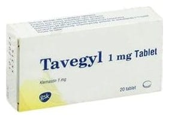

Tavegyl 1 mg Tablet, 20 Adet

Ne için kullanılır
KT · Bölüm 1• TAVEGYL etkin madde olarak klemastin içeren, tablet formunda bir ilaçtır. • TAVEGYL, “antihistaminikler” denilen bir ilaç grubuna dahil olan ve vücut tarafından alerjik reaksiyonlar sırasında salıverilen “histamin” denen maddenin olumsuz etkilerini azaltarak etkisini gösterir. • TAVEGYL tabletler, beyazımsı, yuvarlak görünümündedir ve bir yüzünde X şeklinde çentik bulunmaktadır. TAVEGYL, 20 tabletlik blister ambalajlarda kullanıma sunulmaktadır. • TAVEGYL tablet, sığır kaynaklı sütten elde edilen laktoz içermektedir. • TAVEGYL 1 mg tablet, • Saman nezlesi (gözlerde akıntı, hapşırma, burun akıntısı) ve alerjik rinit (alerji ile ilişkili nezle) g ibi alerjilerden kaynaklanan durumların tedavisinde • Kızarıklık, kaşıntı, ciltte tahriş veya derinin çizildiği zaman şişmesi ve kabarıklık kalması (dermatografi) da dahil olmak üzere değişik kaynaklı deri döküntüleri tedavisinde • Kaşıntı ve kaşıntılı dermatozların (iltihapsız deri hastalıkları) tedavisinde • Aniden gelişen ve sürekli ekzema (kızartılı, sulantılı, su dolu kabarcıklı, kahverengi, kalınlaşmış deri döküntüleri), temasa bağlı iltihaplı döküntü (kontakt dermatit) ve ilaca bağlı döküntülerde yardımcı olarak • Alerjik cilt reaksiyonları (kızarıklık, beneklenme, kaşıntı, kabarıklık/şişlik) tedavisinde ve şişmenin azaltılmasında • Böcek sokmaları ve ısırmalarında kullanılır.